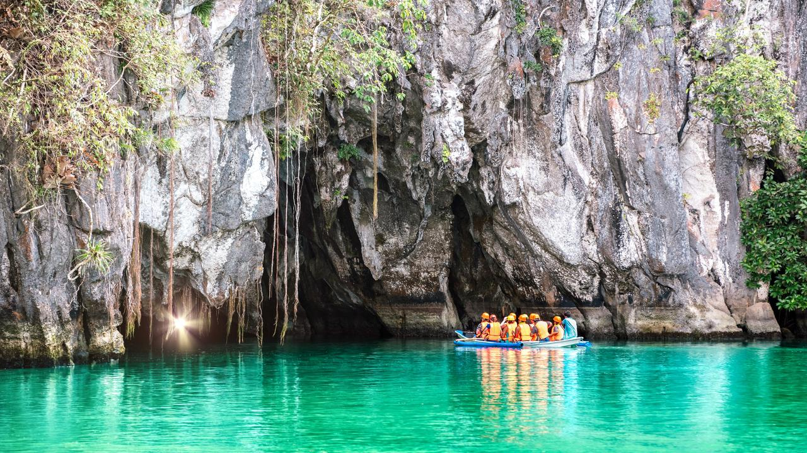
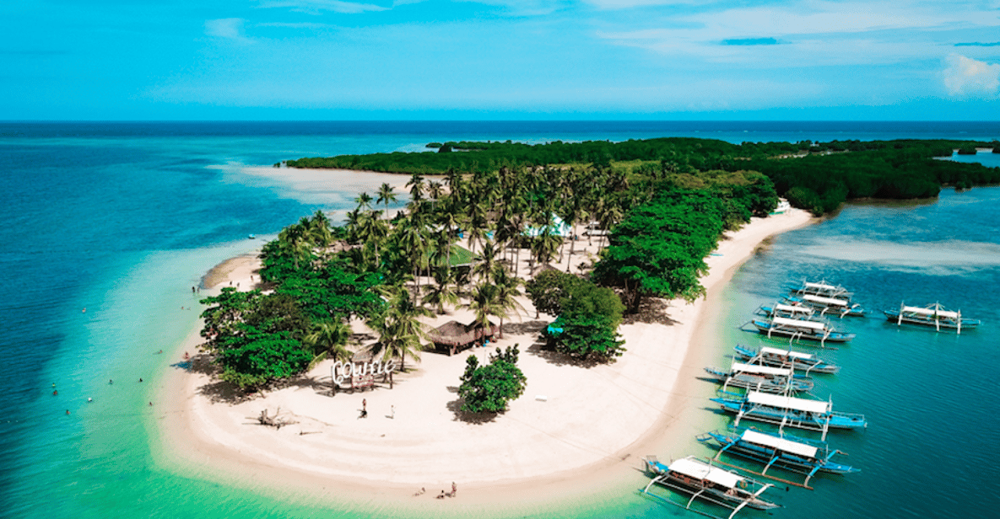

Explore Puerto Princesa's Natural Beauty
Puerto Princesa is home to some of the world’s most stunning natural attractions:
1. Underground River
The Puerto Princesa Subterranean River National Park is a UNESCO World Heritage Site. It features a stunning underground river that flows through majestic caves.
2. Honda Bay
Honda Bay is a cluster of pristine islands perfect for snorkeling, diving, and island hopping. Don't miss Cowrie Island and Starfish Island!
